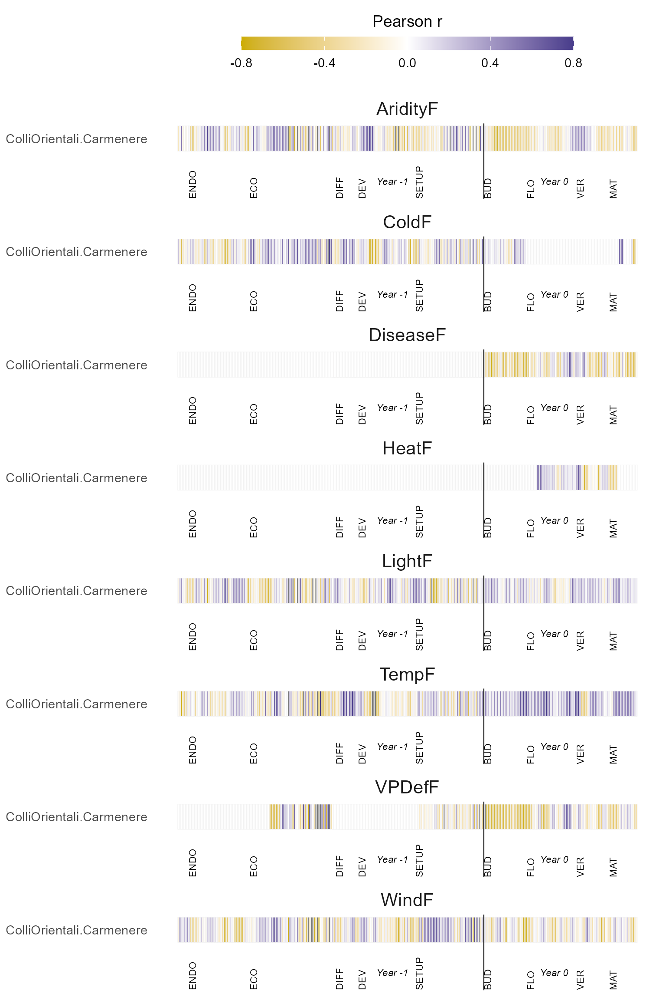
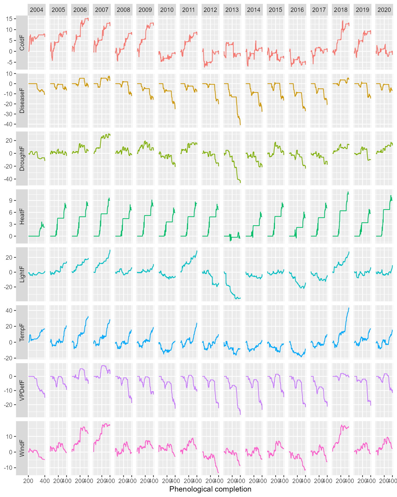
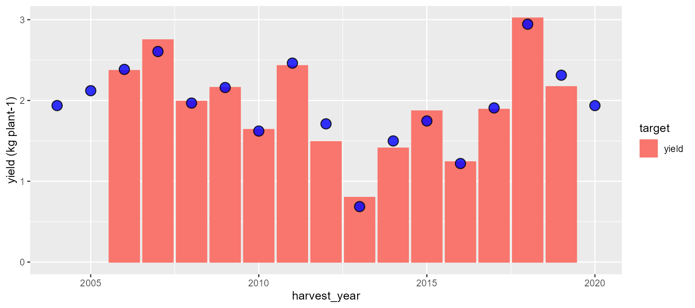
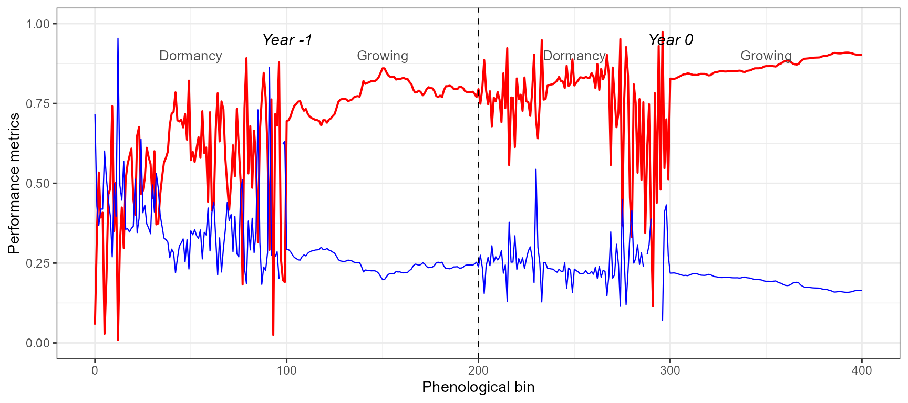

Trait Prediction with PhenoMeNals
run-phenomenals.Rmd🎯 Goal
This vignette shows how to use runPhenomenals() to model grapevine traits (e.g., yield) using eco-physiological memory signals computed along a phenological timeline.
We’ll use the demo datasets included in the package:
colliOrientali — daily weather data
targetSample — observed target traits (e.g., yield)
phenomenalsParameters — model parameters📥 Input parameters
1. weather_data
The very same structure as in phenologyCalibration()
2. target_data
A data frame of phenological and/or target trait observations. An
example is the targetSample
dataset Required columns:
| Column | Description | Example |
|---|---|---|
Site |
Site name (must match Site in
weather_data) |
napa |
Latitude |
Latitude of the site (decimal degrees) | 38.3 |
Longitude |
Longitude of the site (decimal degrees) | 122.0 |
Variety |
Variety name | CabernetS |
Year |
Harvest year | 1994 |
Variable |
Trait name to be modeled (e.g., "yield",
"brix", "malic_acid") |
brix |
Value |
Observed value for the trait | 23.2 |
Notes:
This table is used to link phenological signals with observed traits.
Multiple traits can be provided per site and variety by using different Variable values.
The Value column must be numeric and non-empty.
Internal normalization and alignment with climate/BBCH cycles is handled automatically.3. phenomenalsParameters
A nested list of model parameters (typically from phenomenalsParameters).
Each parameter includes calibration metadata and value ranges. This is
the very same structure than in phenologyCalibration()
4. Other arguments
| Argument | Description | Default |
|---|---|---|
start_year |
First year of simulation or calibration | 2000 |
end_year |
Last year of simulation or calibration | 2025 |
sites |
Sites to include (character vector or "all") |
"all" |
varieties |
Varieties to include (character vector or "all") |
"all" |
timestep |
Time resolution of weather_data: "daily"
or "hourly"
|
"daily" |
target_traits |
Traits to model (e.g., "yield",
"brix") |
"yield" |
rolling_window |
Window size (in days) for smoothing phenological signals | 5 |
evaluation_range |
List of cycle percentage ranges to evaluate (0–400 scale; 0–200 year-1, 200–400 year0) | list(c(0,200)) |
multicollinearity_threshold |
Threshold above which correlated predictors are dropped | 0.8 |
max_phenomenals |
Max number of predictors to retain per model after stepwise regression | 4 |
bin_size |
Resolution (% cycle) to bin phenological signals | 1 |
🔍 Inspect the inputs
kable(head(colliOrientali), caption = "Example weather data") %>%
kable_styling(font_size = 11)| Site | Date | Tmax | Tmin | Precipitation | WindSpeed | RelativeHumidityMax | RelativeHumidityMin | Radiation | Latitude | Longitude |
|---|---|---|---|---|---|---|---|---|---|---|
| ColliOrientali | 1/1/2004 | 10.00 | 3.88 | 0 | 4.606482 | 78 | 53 | 4.954 | 45.64986 | 12.44986 |
| ColliOrientali | 1/2/2004 | 7.01 | 2.64 | 0 | 5.162037 | 63 | 49 | 3.285 | 45.64986 | 12.44986 |
| ColliOrientali | 1/3/2004 | 5.55 | -0.71 | 0 | 6.516204 | 49 | 33 | 5.702 | 45.64986 | 12.44986 |
| ColliOrientali | 1/4/2004 | 3.65 | -4.57 | 0 | 6.203704 | 55 | 32 | 6.393 | 45.64986 | 12.44986 |
| ColliOrientali | 1/5/2004 | 3.37 | -5.42 | 0 | 4.050926 | 62 | 28 | 6.082 | 45.64986 | 12.44986 |
| ColliOrientali | 1/6/2004 | 3.21 | -3.16 | 0 | 7.187500 | 60 | 39 | 5.486 | 45.64986 | 12.44986 |
kable(head(targetSample), caption = "Example target data") %>%
kable_styling(font_size = 11)| Site | latitude | longitude | Variety | Year | Variable | Value | Unit |
|---|---|---|---|---|---|---|---|
| ColliOrientali | 44 | 11 | Carmenere | 2006 | yield | 2.37 | kg plant-1 |
| ColliOrientali | 44 | 11 | Carmenere | 2007 | yield | 2.75 | kg plant-1 |
| ColliOrientali | 44 | 11 | Carmenere | 2008 | yield | 1.99 | kg plant-1 |
| ColliOrientali | 44 | 11 | Carmenere | 2009 | yield | 2.16 | kg plant-1 |
| ColliOrientali | 44 | 11 | Carmenere | 2010 | yield | 1.64 | kg plant-1 |
| ColliOrientali | 44 | 11 | Carmenere | 2011 | yield | 2.43 | kg plant-1 |
⚙️ Run runPhenomenals()
phenomenals_result <- runPhenomenals(
weather_data = colliOrientali,
target_data = targetSample,
phenomenalsParameters = phenomenalsParameters,
start_year = 2004,
end_year = 2020,
sites = "ColliOrientali",
varieties = "Carmenere",
timestep = 'daily',
rolling_window = 3,
target_traits = c('yield'),
evaluation_range = list(c(0,400)),
multicollinearity_threshold=0.8,
max_phenomenals=4,
bin_size=1)
#> Warning: package 'caret' was built under R version 4.4.3
#> ✅ Variety 'Carmenere' is calibrated for site 'ColliOrientali'.
#> 🔄 Smoothing signal: TempF🔄 Smoothing signal: HeatF🔄 Smoothing signal: ColdF🔄 Smoothing signal: LightF🔄 Smoothing signal: AridityF🔄 Smoothing signal: VPDefF🔄 Smoothing signal: WindF🔄 Smoothing signal: DiseaseF✅ done
#> 📊 Computing correlations ➤ yield ✅ done
#> 📊 Computing climatology ✅ Starting phenomenals computation ✅ Phenomenals signals estimated ✅ Phenomenals computed ✅ Multicollinearity computed 🔄 Stepwise selection for: ColliOrientali | Carmenere | yield | Cycle% = 0 🔄 Stepwise selection for: ColliOrientali | Carmenere | yield | Cycle% = 1 🔄 Stepwise selection for: ColliOrientali | Carmenere | yield | Cycle% = 2 🔄 Stepwise selection for: ColliOrientali | Carmenere | yield | Cycle% = 3 🔄 Stepwise selection for: ColliOrientali | Carmenere | yield | Cycle% = 4 🔄 Stepwise selection for: ColliOrientali | Carmenere | yield | Cycle% = 5 🔄 Stepwise selection for: ColliOrientali | Carmenere | yield | Cycle% = 6 🔄 Stepwise selection for: ColliOrientali | Carmenere | yield | Cycle% = 7 🔄 Stepwise selection for: ColliOrientali | Carmenere | yield | Cycle% = 8 🔄 Stepwise selection for: ColliOrientali | Carmenere | yield | Cycle% = 9 🔄 Stepwise selection for: ColliOrientali | Carmenere | yield | Cycle% = 10 🔄 Stepwise selection for: ColliOrientali | Carmenere | yield | Cycle% = 11 🔄 Stepwise selection for: ColliOrientali | Carmenere | yield | Cycle% = 12 🔄 Stepwise selection for: ColliOrientali | Carmenere | yield | Cycle% = 13 🔄 Stepwise selection for: ColliOrientali | Carmenere | yield | Cycle% = 14 🔄 Stepwise selection for: ColliOrientali | Carmenere | yield | Cycle% = 15 🔄 Stepwise selection for: ColliOrientali | Carmenere | yield | Cycle% = 16 🔄 Stepwise selection for: ColliOrientali | Carmenere | yield | Cycle% = 17 🔄 Stepwise selection for: ColliOrientali | Carmenere | yield | Cycle% = 18 🔄 Stepwise selection for: ColliOrientali | Carmenere | yield | Cycle% = 19 🔄 Stepwise selection for: ColliOrientali | Carmenere | yield | Cycle% = 20 🔄 Stepwise selection for: ColliOrientali | Carmenere | yield | Cycle% = 21 🔄 Stepwise selection for: ColliOrientali | Carmenere | yield | Cycle% = 22 🔄 Stepwise selection for: ColliOrientali | Carmenere | yield | Cycle% = 23 🔄 Stepwise selection for: ColliOrientali | Carmenere | yield | Cycle% = 24 🔄 Stepwise selection for: ColliOrientali | Carmenere | yield | Cycle% = 25 🔄 Stepwise selection for: ColliOrientali | Carmenere | yield | Cycle% = 26 🔄 Stepwise selection for: ColliOrientali | Carmenere | yield | Cycle% = 27 🔄 Stepwise selection for: ColliOrientali | Carmenere | yield | Cycle% = 28 🔄 Stepwise selection for: ColliOrientali | Carmenere | yield | Cycle% = 29 🔄 Stepwise selection for: ColliOrientali | Carmenere | yield | Cycle% = 30 🔄 Stepwise selection for: ColliOrientali | Carmenere | yield | Cycle% = 31 🔄 Stepwise selection for: ColliOrientali | Carmenere | yield | Cycle% = 32 🔄 Stepwise selection for: ColliOrientali | Carmenere | yield | Cycle% = 33 🔄 Stepwise selection for: ColliOrientali | Carmenere | yield | Cycle% = 34 🔄 Stepwise selection for: ColliOrientali | Carmenere | yield | Cycle% = 35 🔄 Stepwise selection for: ColliOrientali | Carmenere | yield | Cycle% = 36 🔄 Stepwise selection for: ColliOrientali | Carmenere | yield | Cycle% = 37 🔄 Stepwise selection for: ColliOrientali | Carmenere | yield | Cycle% = 38 🔄 Stepwise selection for: ColliOrientali | Carmenere | yield | Cycle% = 39 🔄 Stepwise selection for: ColliOrientali | Carmenere | yield | Cycle% = 40 🔄 Stepwise selection for: ColliOrientali | Carmenere | yield | Cycle% = 41 🔄 Stepwise selection for: ColliOrientali | Carmenere | yield | Cycle% = 42 🔄 Stepwise selection for: ColliOrientali | Carmenere | yield | Cycle% = 43 🔄 Stepwise selection for: ColliOrientali | Carmenere | yield | Cycle% = 44 🔄 Stepwise selection for: ColliOrientali | Carmenere | yield | Cycle% = 45 🔄 Stepwise selection for: ColliOrientali | Carmenere | yield | Cycle% = 46 🔄 Stepwise selection for: ColliOrientali | Carmenere | yield | Cycle% = 47 🔄 Stepwise selection for: ColliOrientali | Carmenere | yield | Cycle% = 48 🔄 Stepwise selection for: ColliOrientali | Carmenere | yield | Cycle% = 49 🔄 Stepwise selection for: ColliOrientali | Carmenere | yield | Cycle% = 50 🔄 Stepwise selection for: ColliOrientali | Carmenere | yield | Cycle% = 51 🔄 Stepwise selection for: ColliOrientali | Carmenere | yield | Cycle% = 52 🔄 Stepwise selection for: ColliOrientali | Carmenere | yield | Cycle% = 53 🔄 Stepwise selection for: ColliOrientali | Carmenere | yield | Cycle% = 54 🔄 Stepwise selection for: ColliOrientali | Carmenere | yield | Cycle% = 55 🔄 Stepwise selection for: ColliOrientali | Carmenere | yield | Cycle% = 56 🔄 Stepwise selection for: ColliOrientali | Carmenere | yield | Cycle% = 57 🔄 Stepwise selection for: ColliOrientali | Carmenere | yield | Cycle% = 58 🔄 Stepwise selection for: ColliOrientali | Carmenere | yield | Cycle% = 59 🔄 Stepwise selection for: ColliOrientali | Carmenere | yield | Cycle% = 60 🔄 Stepwise selection for: ColliOrientali | Carmenere | yield | Cycle% = 61 🔄 Stepwise selection for: ColliOrientali | Carmenere | yield | Cycle% = 62 🔄 Stepwise selection for: ColliOrientali | Carmenere | yield | Cycle% = 63 🔄 Stepwise selection for: ColliOrientali | Carmenere | yield | Cycle% = 64 🔄 Stepwise selection for: ColliOrientali | Carmenere | yield | Cycle% = 65 🔄 Stepwise selection for: ColliOrientali | Carmenere | yield | Cycle% = 66 🔄 Stepwise selection for: ColliOrientali | Carmenere | yield | Cycle% = 67 🔄 Stepwise selection for: ColliOrientali | Carmenere | yield | Cycle% = 68 🔄 Stepwise selection for: ColliOrientali | Carmenere | yield | Cycle% = 69 🔄 Stepwise selection for: ColliOrientali | Carmenere | yield | Cycle% = 70 🔄 Stepwise selection for: ColliOrientali | Carmenere | yield | Cycle% = 71 🔄 Stepwise selection for: ColliOrientali | Carmenere | yield | Cycle% = 72 🔄 Stepwise selection for: ColliOrientali | Carmenere | yield | Cycle% = 73 🔄 Stepwise selection for: ColliOrientali | Carmenere | yield | Cycle% = 74 🔄 Stepwise selection for: ColliOrientali | Carmenere | yield | Cycle% = 75 🔄 Stepwise selection for: ColliOrientali | Carmenere | yield | Cycle% = 76 🔄 Stepwise selection for: ColliOrientali | Carmenere | yield | Cycle% = 77 🔄 Stepwise selection for: ColliOrientali | Carmenere | yield | Cycle% = 78 🔄 Stepwise selection for: ColliOrientali | Carmenere | yield | Cycle% = 79 🔄 Stepwise selection for: ColliOrientali | Carmenere | yield | Cycle% = 80 🔄 Stepwise selection for: ColliOrientali | Carmenere | yield | Cycle% = 81 🔄 Stepwise selection for: ColliOrientali | Carmenere | yield | Cycle% = 82 🔄 Stepwise selection for: ColliOrientali | Carmenere | yield | Cycle% = 83 🔄 Stepwise selection for: ColliOrientali | Carmenere | yield | Cycle% = 84 🔄 Stepwise selection for: ColliOrientali | Carmenere | yield | Cycle% = 85 🔄 Stepwise selection for: ColliOrientali | Carmenere | yield | Cycle% = 86 🔄 Stepwise selection for: ColliOrientali | Carmenere | yield | Cycle% = 87 🔄 Stepwise selection for: ColliOrientali | Carmenere | yield | Cycle% = 88 🔄 Stepwise selection for: ColliOrientali | Carmenere | yield | Cycle% = 89 🔄 Stepwise selection for: ColliOrientali | Carmenere | yield | Cycle% = 90 🔄 Stepwise selection for: ColliOrientali | Carmenere | yield | Cycle% = 91 🔄 Stepwise selection for: ColliOrientali | Carmenere | yield | Cycle% = 92 🔄 Stepwise selection for: ColliOrientali | Carmenere | yield | Cycle% = 93 🔄 Stepwise selection for: ColliOrientali | Carmenere | yield | Cycle% = 94 🔄 Stepwise selection for: ColliOrientali | Carmenere | yield | Cycle% = 95 🔄 Stepwise selection for: ColliOrientali | Carmenere | yield | Cycle% = 96 🔄 Stepwise selection for: ColliOrientali | Carmenere | yield | Cycle% = 97 🔄 Stepwise selection for: ColliOrientali | Carmenere | yield | Cycle% = 98 🔄 Stepwise selection for: ColliOrientali | Carmenere | yield | Cycle% = 99 🔄 Stepwise selection for: ColliOrientali | Carmenere | yield | Cycle% = 100 🔄 Stepwise selection for: ColliOrientali | Carmenere | yield | Cycle% = 101 🔄 Stepwise selection for: ColliOrientali | Carmenere | yield | Cycle% = 102 🔄 Stepwise selection for: ColliOrientali | Carmenere | yield | Cycle% = 103 🔄 Stepwise selection for: ColliOrientali | Carmenere | yield | Cycle% = 104 🔄 Stepwise selection for: ColliOrientali | Carmenere | yield | Cycle% = 105 🔄 Stepwise selection for: ColliOrientali | Carmenere | yield | Cycle% = 106 🔄 Stepwise selection for: ColliOrientali | Carmenere | yield | Cycle% = 107 🔄 Stepwise selection for: ColliOrientali | Carmenere | yield | Cycle% = 108 🔄 Stepwise selection for: ColliOrientali | Carmenere | yield | Cycle% = 109 🔄 Stepwise selection for: ColliOrientali | Carmenere | yield | Cycle% = 110 🔄 Stepwise selection for: ColliOrientali | Carmenere | yield | Cycle% = 111 🔄 Stepwise selection for: ColliOrientali | Carmenere | yield | Cycle% = 112 🔄 Stepwise selection for: ColliOrientali | Carmenere | yield | Cycle% = 113 🔄 Stepwise selection for: ColliOrientali | Carmenere | yield | Cycle% = 114 🔄 Stepwise selection for: ColliOrientali | Carmenere | yield | Cycle% = 115 🔄 Stepwise selection for: ColliOrientali | Carmenere | yield | Cycle% = 116 🔄 Stepwise selection for: ColliOrientali | Carmenere | yield | Cycle% = 117 🔄 Stepwise selection for: ColliOrientali | Carmenere | yield | Cycle% = 118 🔄 Stepwise selection for: ColliOrientali | Carmenere | yield | Cycle% = 119 🔄 Stepwise selection for: ColliOrientali | Carmenere | yield | Cycle% = 120 🔄 Stepwise selection for: ColliOrientali | Carmenere | yield | Cycle% = 121 🔄 Stepwise selection for: ColliOrientali | Carmenere | yield | Cycle% = 122 🔄 Stepwise selection for: ColliOrientali | Carmenere | yield | Cycle% = 123 🔄 Stepwise selection for: ColliOrientali | Carmenere | yield | Cycle% = 124 🔄 Stepwise selection for: ColliOrientali | Carmenere | yield | Cycle% = 125 🔄 Stepwise selection for: ColliOrientali | Carmenere | yield | Cycle% = 126 🔄 Stepwise selection for: ColliOrientali | Carmenere | yield | Cycle% = 127 🔄 Stepwise selection for: ColliOrientali | Carmenere | yield | Cycle% = 128 🔄 Stepwise selection for: ColliOrientali | Carmenere | yield | Cycle% = 129 🔄 Stepwise selection for: ColliOrientali | Carmenere | yield | Cycle% = 130 🔄 Stepwise selection for: ColliOrientali | Carmenere | yield | Cycle% = 131 🔄 Stepwise selection for: ColliOrientali | Carmenere | yield | Cycle% = 132 🔄 Stepwise selection for: ColliOrientali | Carmenere | yield | Cycle% = 133 🔄 Stepwise selection for: ColliOrientali | Carmenere | yield | Cycle% = 134 🔄 Stepwise selection for: ColliOrientali | Carmenere | yield | Cycle% = 135 🔄 Stepwise selection for: ColliOrientali | Carmenere | yield | Cycle% = 136 🔄 Stepwise selection for: ColliOrientali | Carmenere | yield | Cycle% = 137 🔄 Stepwise selection for: ColliOrientali | Carmenere | yield | Cycle% = 138 🔄 Stepwise selection for: ColliOrientali | Carmenere | yield | Cycle% = 139 🔄 Stepwise selection for: ColliOrientali | Carmenere | yield | Cycle% = 140 🔄 Stepwise selection for: ColliOrientali | Carmenere | yield | Cycle% = 141 🔄 Stepwise selection for: ColliOrientali | Carmenere | yield | Cycle% = 142 🔄 Stepwise selection for: ColliOrientali | Carmenere | yield | Cycle% = 143 🔄 Stepwise selection for: ColliOrientali | Carmenere | yield | Cycle% = 144 🔄 Stepwise selection for: ColliOrientali | Carmenere | yield | Cycle% = 145 🔄 Stepwise selection for: ColliOrientali | Carmenere | yield | Cycle% = 146 🔄 Stepwise selection for: ColliOrientali | Carmenere | yield | Cycle% = 147 🔄 Stepwise selection for: ColliOrientali | Carmenere | yield | Cycle% = 148 🔄 Stepwise selection for: ColliOrientali | Carmenere | yield | Cycle% = 149 🔄 Stepwise selection for: ColliOrientali | Carmenere | yield | Cycle% = 150 🔄 Stepwise selection for: ColliOrientali | Carmenere | yield | Cycle% = 151 🔄 Stepwise selection for: ColliOrientali | Carmenere | yield | Cycle% = 152 🔄 Stepwise selection for: ColliOrientali | Carmenere | yield | Cycle% = 153 🔄 Stepwise selection for: ColliOrientali | Carmenere | yield | Cycle% = 154 🔄 Stepwise selection for: ColliOrientali | Carmenere | yield | Cycle% = 155 🔄 Stepwise selection for: ColliOrientali | Carmenere | yield | Cycle% = 156 🔄 Stepwise selection for: ColliOrientali | Carmenere | yield | Cycle% = 157 🔄 Stepwise selection for: ColliOrientali | Carmenere | yield | Cycle% = 158 🔄 Stepwise selection for: ColliOrientali | Carmenere | yield | Cycle% = 159 🔄 Stepwise selection for: ColliOrientali | Carmenere | yield | Cycle% = 160 🔄 Stepwise selection for: ColliOrientali | Carmenere | yield | Cycle% = 161 🔄 Stepwise selection for: ColliOrientali | Carmenere | yield | Cycle% = 162 🔄 Stepwise selection for: ColliOrientali | Carmenere | yield | Cycle% = 163 🔄 Stepwise selection for: ColliOrientali | Carmenere | yield | Cycle% = 164 🔄 Stepwise selection for: ColliOrientali | Carmenere | yield | Cycle% = 165 🔄 Stepwise selection for: ColliOrientali | Carmenere | yield | Cycle% = 166 🔄 Stepwise selection for: ColliOrientali | Carmenere | yield | Cycle% = 167 🔄 Stepwise selection for: ColliOrientali | Carmenere | yield | Cycle% = 168 🔄 Stepwise selection for: ColliOrientali | Carmenere | yield | Cycle% = 169 🔄 Stepwise selection for: ColliOrientali | Carmenere | yield | Cycle% = 170 🔄 Stepwise selection for: ColliOrientali | Carmenere | yield | Cycle% = 171 🔄 Stepwise selection for: ColliOrientali | Carmenere | yield | Cycle% = 172 🔄 Stepwise selection for: ColliOrientali | Carmenere | yield | Cycle% = 173 🔄 Stepwise selection for: ColliOrientali | Carmenere | yield | Cycle% = 174 🔄 Stepwise selection for: ColliOrientali | Carmenere | yield | Cycle% = 175 🔄 Stepwise selection for: ColliOrientali | Carmenere | yield | Cycle% = 176 🔄 Stepwise selection for: ColliOrientali | Carmenere | yield | Cycle% = 177 🔄 Stepwise selection for: ColliOrientali | Carmenere | yield | Cycle% = 178 🔄 Stepwise selection for: ColliOrientali | Carmenere | yield | Cycle% = 179 🔄 Stepwise selection for: ColliOrientali | Carmenere | yield | Cycle% = 180 🔄 Stepwise selection for: ColliOrientali | Carmenere | yield | Cycle% = 181 🔄 Stepwise selection for: ColliOrientali | Carmenere | yield | Cycle% = 182 🔄 Stepwise selection for: ColliOrientali | Carmenere | yield | Cycle% = 183 🔄 Stepwise selection for: ColliOrientali | Carmenere | yield | Cycle% = 184 🔄 Stepwise selection for: ColliOrientali | Carmenere | yield | Cycle% = 185 🔄 Stepwise selection for: ColliOrientali | Carmenere | yield | Cycle% = 186 🔄 Stepwise selection for: ColliOrientali | Carmenere | yield | Cycle% = 187 🔄 Stepwise selection for: ColliOrientali | Carmenere | yield | Cycle% = 188 🔄 Stepwise selection for: ColliOrientali | Carmenere | yield | Cycle% = 189 🔄 Stepwise selection for: ColliOrientali | Carmenere | yield | Cycle% = 190 🔄 Stepwise selection for: ColliOrientali | Carmenere | yield | Cycle% = 191 🔄 Stepwise selection for: ColliOrientali | Carmenere | yield | Cycle% = 192 🔄 Stepwise selection for: ColliOrientali | Carmenere | yield | Cycle% = 193 🔄 Stepwise selection for: ColliOrientali | Carmenere | yield | Cycle% = 194 🔄 Stepwise selection for: ColliOrientali | Carmenere | yield | Cycle% = 195 🔄 Stepwise selection for: ColliOrientali | Carmenere | yield | Cycle% = 196 🔄 Stepwise selection for: ColliOrientali | Carmenere | yield | Cycle% = 197 🔄 Stepwise selection for: ColliOrientali | Carmenere | yield | Cycle% = 198 🔄 Stepwise selection for: ColliOrientali | Carmenere | yield | Cycle% = 199 🔄 Stepwise selection for: ColliOrientali | Carmenere | yield | Cycle% = 200 🔄 Stepwise selection for: ColliOrientali | Carmenere | yield | Cycle% = 201 🔄 Stepwise selection for: ColliOrientali | Carmenere | yield | Cycle% = 202 🔄 Stepwise selection for: ColliOrientali | Carmenere | yield | Cycle% = 203 🔄 Stepwise selection for: ColliOrientali | Carmenere | yield | Cycle% = 204 🔄 Stepwise selection for: ColliOrientali | Carmenere | yield | Cycle% = 205 🔄 Stepwise selection for: ColliOrientali | Carmenere | yield | Cycle% = 206 🔄 Stepwise selection for: ColliOrientali | Carmenere | yield | Cycle% = 207 🔄 Stepwise selection for: ColliOrientali | Carmenere | yield | Cycle% = 208 🔄 Stepwise selection for: ColliOrientali | Carmenere | yield | Cycle% = 209 🔄 Stepwise selection for: ColliOrientali | Carmenere | yield | Cycle% = 210 🔄 Stepwise selection for: ColliOrientali | Carmenere | yield | Cycle% = 211 🔄 Stepwise selection for: ColliOrientali | Carmenere | yield | Cycle% = 212 🔄 Stepwise selection for: ColliOrientali | Carmenere | yield | Cycle% = 213 🔄 Stepwise selection for: ColliOrientali | Carmenere | yield | Cycle% = 214 🔄 Stepwise selection for: ColliOrientali | Carmenere | yield | Cycle% = 215 🔄 Stepwise selection for: ColliOrientali | Carmenere | yield | Cycle% = 216 🔄 Stepwise selection for: ColliOrientali | Carmenere | yield | Cycle% = 217 🔄 Stepwise selection for: ColliOrientali | Carmenere | yield | Cycle% = 218 🔄 Stepwise selection for: ColliOrientali | Carmenere | yield | Cycle% = 219 🔄 Stepwise selection for: ColliOrientali | Carmenere | yield | Cycle% = 220 🔄 Stepwise selection for: ColliOrientali | Carmenere | yield | Cycle% = 221 🔄 Stepwise selection for: ColliOrientali | Carmenere | yield | Cycle% = 222 🔄 Stepwise selection for: ColliOrientali | Carmenere | yield | Cycle% = 223 🔄 Stepwise selection for: ColliOrientali | Carmenere | yield | Cycle% = 224 🔄 Stepwise selection for: ColliOrientali | Carmenere | yield | Cycle% = 225 🔄 Stepwise selection for: ColliOrientali | Carmenere | yield | Cycle% = 226 🔄 Stepwise selection for: ColliOrientali | Carmenere | yield | Cycle% = 227 🔄 Stepwise selection for: ColliOrientali | Carmenere | yield | Cycle% = 228 🔄 Stepwise selection for: ColliOrientali | Carmenere | yield | Cycle% = 229 🔄 Stepwise selection for: ColliOrientali | Carmenere | yield | Cycle% = 230 🔄 Stepwise selection for: ColliOrientali | Carmenere | yield | Cycle% = 231 🔄 Stepwise selection for: ColliOrientali | Carmenere | yield | Cycle% = 232 🔄 Stepwise selection for: ColliOrientali | Carmenere | yield | Cycle% = 233 🔄 Stepwise selection for: ColliOrientali | Carmenere | yield | Cycle% = 234 🔄 Stepwise selection for: ColliOrientali | Carmenere | yield | Cycle% = 235 🔄 Stepwise selection for: ColliOrientali | Carmenere | yield | Cycle% = 236 🔄 Stepwise selection for: ColliOrientali | Carmenere | yield | Cycle% = 237 🔄 Stepwise selection for: ColliOrientali | Carmenere | yield | Cycle% = 238 🔄 Stepwise selection for: ColliOrientali | Carmenere | yield | Cycle% = 239 🔄 Stepwise selection for: ColliOrientali | Carmenere | yield | Cycle% = 240 🔄 Stepwise selection for: ColliOrientali | Carmenere | yield | Cycle% = 241 🔄 Stepwise selection for: ColliOrientali | Carmenere | yield | Cycle% = 242 🔄 Stepwise selection for: ColliOrientali | Carmenere | yield | Cycle% = 243 🔄 Stepwise selection for: ColliOrientali | Carmenere | yield | Cycle% = 244 🔄 Stepwise selection for: ColliOrientali | Carmenere | yield | Cycle% = 245 🔄 Stepwise selection for: ColliOrientali | Carmenere | yield | Cycle% = 246 🔄 Stepwise selection for: ColliOrientali | Carmenere | yield | Cycle% = 247 🔄 Stepwise selection for: ColliOrientali | Carmenere | yield | Cycle% = 248 🔄 Stepwise selection for: ColliOrientali | Carmenere | yield | Cycle% = 249 🔄 Stepwise selection for: ColliOrientali | Carmenere | yield | Cycle% = 250 🔄 Stepwise selection for: ColliOrientali | Carmenere | yield | Cycle% = 251 🔄 Stepwise selection for: ColliOrientali | Carmenere | yield | Cycle% = 252 🔄 Stepwise selection for: ColliOrientali | Carmenere | yield | Cycle% = 253 🔄 Stepwise selection for: ColliOrientali | Carmenere | yield | Cycle% = 254 🔄 Stepwise selection for: ColliOrientali | Carmenere | yield | Cycle% = 255 🔄 Stepwise selection for: ColliOrientali | Carmenere | yield | Cycle% = 256 🔄 Stepwise selection for: ColliOrientali | Carmenere | yield | Cycle% = 257 🔄 Stepwise selection for: ColliOrientali | Carmenere | yield | Cycle% = 258 🔄 Stepwise selection for: ColliOrientali | Carmenere | yield | Cycle% = 259 🔄 Stepwise selection for: ColliOrientali | Carmenere | yield | Cycle% = 260 🔄 Stepwise selection for: ColliOrientali | Carmenere | yield | Cycle% = 261 🔄 Stepwise selection for: ColliOrientali | Carmenere | yield | Cycle% = 262 🔄 Stepwise selection for: ColliOrientali | Carmenere | yield | Cycle% = 263 🔄 Stepwise selection for: ColliOrientali | Carmenere | yield | Cycle% = 264 🔄 Stepwise selection for: ColliOrientali | Carmenere | yield | Cycle% = 265 🔄 Stepwise selection for: ColliOrientali | Carmenere | yield | Cycle% = 266 🔄 Stepwise selection for: ColliOrientali | Carmenere | yield | Cycle% = 267 🔄 Stepwise selection for: ColliOrientali | Carmenere | yield | Cycle% = 268 🔄 Stepwise selection for: ColliOrientali | Carmenere | yield | Cycle% = 269 🔄 Stepwise selection for: ColliOrientali | Carmenere | yield | Cycle% = 270 🔄 Stepwise selection for: ColliOrientali | Carmenere | yield | Cycle% = 271 🔄 Stepwise selection for: ColliOrientali | Carmenere | yield | Cycle% = 272 🔄 Stepwise selection for: ColliOrientali | Carmenere | yield | Cycle% = 273 🔄 Stepwise selection for: ColliOrientali | Carmenere | yield | Cycle% = 274 🔄 Stepwise selection for: ColliOrientali | Carmenere | yield | Cycle% = 275 🔄 Stepwise selection for: ColliOrientali | Carmenere | yield | Cycle% = 276 🔄 Stepwise selection for: ColliOrientali | Carmenere | yield | Cycle% = 277 🔄 Stepwise selection for: ColliOrientali | Carmenere | yield | Cycle% = 278 🔄 Stepwise selection for: ColliOrientali | Carmenere | yield | Cycle% = 279 🔄 Stepwise selection for: ColliOrientali | Carmenere | yield | Cycle% = 280 🔄 Stepwise selection for: ColliOrientali | Carmenere | yield | Cycle% = 281 🔄 Stepwise selection for: ColliOrientali | Carmenere | yield | Cycle% = 282 🔄 Stepwise selection for: ColliOrientali | Carmenere | yield | Cycle% = 283 🔄 Stepwise selection for: ColliOrientali | Carmenere | yield | Cycle% = 284 🔄 Stepwise selection for: ColliOrientali | Carmenere | yield | Cycle% = 285 🔄 Stepwise selection for: ColliOrientali | Carmenere | yield | Cycle% = 286 🔄 Stepwise selection for: ColliOrientali | Carmenere | yield | Cycle% = 287 🔄 Stepwise selection for: ColliOrientali | Carmenere | yield | Cycle% = 288 🔄 Stepwise selection for: ColliOrientali | Carmenere | yield | Cycle% = 289 🔄 Stepwise selection for: ColliOrientali | Carmenere | yield | Cycle% = 290 🔄 Stepwise selection for: ColliOrientali | Carmenere | yield | Cycle% = 291 🔄 Stepwise selection for: ColliOrientali | Carmenere | yield | Cycle% = 292 🔄 Stepwise selection for: ColliOrientali | Carmenere | yield | Cycle% = 293 🔄 Stepwise selection for: ColliOrientali | Carmenere | yield | Cycle% = 294 🔄 Stepwise selection for: ColliOrientali | Carmenere | yield | Cycle% = 295 🔄 Stepwise selection for: ColliOrientali | Carmenere | yield | Cycle% = 296 🔄 Stepwise selection for: ColliOrientali | Carmenere | yield | Cycle% = 297 🔄 Stepwise selection for: ColliOrientali | Carmenere | yield | Cycle% = 298 🔄 Stepwise selection for: ColliOrientali | Carmenere | yield | Cycle% = 299 🔄 Stepwise selection for: ColliOrientali | Carmenere | yield | Cycle% = 300 🔄 Stepwise selection for: ColliOrientali | Carmenere | yield | Cycle% = 301 🔄 Stepwise selection for: ColliOrientali | Carmenere | yield | Cycle% = 302 🔄 Stepwise selection for: ColliOrientali | Carmenere | yield | Cycle% = 303 🔄 Stepwise selection for: ColliOrientali | Carmenere | yield | Cycle% = 304 🔄 Stepwise selection for: ColliOrientali | Carmenere | yield | Cycle% = 305 🔄 Stepwise selection for: ColliOrientali | Carmenere | yield | Cycle% = 306 🔄 Stepwise selection for: ColliOrientali | Carmenere | yield | Cycle% = 307 🔄 Stepwise selection for: ColliOrientali | Carmenere | yield | Cycle% = 308 🔄 Stepwise selection for: ColliOrientali | Carmenere | yield | Cycle% = 309 🔄 Stepwise selection for: ColliOrientali | Carmenere | yield | Cycle% = 310 🔄 Stepwise selection for: ColliOrientali | Carmenere | yield | Cycle% = 311 🔄 Stepwise selection for: ColliOrientali | Carmenere | yield | Cycle% = 312 🔄 Stepwise selection for: ColliOrientali | Carmenere | yield | Cycle% = 313 🔄 Stepwise selection for: ColliOrientali | Carmenere | yield | Cycle% = 314 🔄 Stepwise selection for: ColliOrientali | Carmenere | yield | Cycle% = 315 🔄 Stepwise selection for: ColliOrientali | Carmenere | yield | Cycle% = 316 🔄 Stepwise selection for: ColliOrientali | Carmenere | yield | Cycle% = 317 🔄 Stepwise selection for: ColliOrientali | Carmenere | yield | Cycle% = 318 🔄 Stepwise selection for: ColliOrientali | Carmenere | yield | Cycle% = 319 🔄 Stepwise selection for: ColliOrientali | Carmenere | yield | Cycle% = 320 🔄 Stepwise selection for: ColliOrientali | Carmenere | yield | Cycle% = 321 🔄 Stepwise selection for: ColliOrientali | Carmenere | yield | Cycle% = 322 🔄 Stepwise selection for: ColliOrientali | Carmenere | yield | Cycle% = 323 🔄 Stepwise selection for: ColliOrientali | Carmenere | yield | Cycle% = 324 🔄 Stepwise selection for: ColliOrientali | Carmenere | yield | Cycle% = 325 🔄 Stepwise selection for: ColliOrientali | Carmenere | yield | Cycle% = 326 🔄 Stepwise selection for: ColliOrientali | Carmenere | yield | Cycle% = 327 🔄 Stepwise selection for: ColliOrientali | Carmenere | yield | Cycle% = 328 🔄 Stepwise selection for: ColliOrientali | Carmenere | yield | Cycle% = 329 🔄 Stepwise selection for: ColliOrientali | Carmenere | yield | Cycle% = 330 🔄 Stepwise selection for: ColliOrientali | Carmenere | yield | Cycle% = 331 🔄 Stepwise selection for: ColliOrientali | Carmenere | yield | Cycle% = 332 🔄 Stepwise selection for: ColliOrientali | Carmenere | yield | Cycle% = 333 🔄 Stepwise selection for: ColliOrientali | Carmenere | yield | Cycle% = 334 🔄 Stepwise selection for: ColliOrientali | Carmenere | yield | Cycle% = 335 🔄 Stepwise selection for: ColliOrientali | Carmenere | yield | Cycle% = 336 🔄 Stepwise selection for: ColliOrientali | Carmenere | yield | Cycle% = 337 🔄 Stepwise selection for: ColliOrientali | Carmenere | yield | Cycle% = 338 🔄 Stepwise selection for: ColliOrientali | Carmenere | yield | Cycle% = 339 🔄 Stepwise selection for: ColliOrientali | Carmenere | yield | Cycle% = 340 🔄 Stepwise selection for: ColliOrientali | Carmenere | yield | Cycle% = 341 🔄 Stepwise selection for: ColliOrientali | Carmenere | yield | Cycle% = 342 🔄 Stepwise selection for: ColliOrientali | Carmenere | yield | Cycle% = 343 🔄 Stepwise selection for: ColliOrientali | Carmenere | yield | Cycle% = 344 🔄 Stepwise selection for: ColliOrientali | Carmenere | yield | Cycle% = 345 🔄 Stepwise selection for: ColliOrientali | Carmenere | yield | Cycle% = 346 🔄 Stepwise selection for: ColliOrientali | Carmenere | yield | Cycle% = 347 🔄 Stepwise selection for: ColliOrientali | Carmenere | yield | Cycle% = 348 🔄 Stepwise selection for: ColliOrientali | Carmenere | yield | Cycle% = 349 🔄 Stepwise selection for: ColliOrientali | Carmenere | yield | Cycle% = 350 🔄 Stepwise selection for: ColliOrientali | Carmenere | yield | Cycle% = 351 🔄 Stepwise selection for: ColliOrientali | Carmenere | yield | Cycle% = 352 🔄 Stepwise selection for: ColliOrientali | Carmenere | yield | Cycle% = 353 🔄 Stepwise selection for: ColliOrientali | Carmenere | yield | Cycle% = 354 🔄 Stepwise selection for: ColliOrientali | Carmenere | yield | Cycle% = 355 🔄 Stepwise selection for: ColliOrientali | Carmenere | yield | Cycle% = 356 🔄 Stepwise selection for: ColliOrientali | Carmenere | yield | Cycle% = 357 🔄 Stepwise selection for: ColliOrientali | Carmenere | yield | Cycle% = 358 🔄 Stepwise selection for: ColliOrientali | Carmenere | yield | Cycle% = 359 🔄 Stepwise selection for: ColliOrientali | Carmenere | yield | Cycle% = 360 🔄 Stepwise selection for: ColliOrientali | Carmenere | yield | Cycle% = 361 🔄 Stepwise selection for: ColliOrientali | Carmenere | yield | Cycle% = 362 🔄 Stepwise selection for: ColliOrientali | Carmenere | yield | Cycle% = 363 🔄 Stepwise selection for: ColliOrientali | Carmenere | yield | Cycle% = 364 🔄 Stepwise selection for: ColliOrientali | Carmenere | yield | Cycle% = 365 🔄 Stepwise selection for: ColliOrientali | Carmenere | yield | Cycle% = 366 🔄 Stepwise selection for: ColliOrientali | Carmenere | yield | Cycle% = 367 🔄 Stepwise selection for: ColliOrientali | Carmenere | yield | Cycle% = 368 🔄 Stepwise selection for: ColliOrientali | Carmenere | yield | Cycle% = 369 🔄 Stepwise selection for: ColliOrientali | Carmenere | yield | Cycle% = 370 🔄 Stepwise selection for: ColliOrientali | Carmenere | yield | Cycle% = 371 🔄 Stepwise selection for: ColliOrientali | Carmenere | yield | Cycle% = 372 🔄 Stepwise selection for: ColliOrientali | Carmenere | yield | Cycle% = 373 🔄 Stepwise selection for: ColliOrientali | Carmenere | yield | Cycle% = 374 🔄 Stepwise selection for: ColliOrientali | Carmenere | yield | Cycle% = 375 🔄 Stepwise selection for: ColliOrientali | Carmenere | yield | Cycle% = 376 🔄 Stepwise selection for: ColliOrientali | Carmenere | yield | Cycle% = 377 🔄 Stepwise selection for: ColliOrientali | Carmenere | yield | Cycle% = 378 🔄 Stepwise selection for: ColliOrientali | Carmenere | yield | Cycle% = 379 🔄 Stepwise selection for: ColliOrientali | Carmenere | yield | Cycle% = 380 🔄 Stepwise selection for: ColliOrientali | Carmenere | yield | Cycle% = 381 🔄 Stepwise selection for: ColliOrientali | Carmenere | yield | Cycle% = 382 🔄 Stepwise selection for: ColliOrientali | Carmenere | yield | Cycle% = 383 🔄 Stepwise selection for: ColliOrientali | Carmenere | yield | Cycle% = 384 🔄 Stepwise selection for: ColliOrientali | Carmenere | yield | Cycle% = 385 🔄 Stepwise selection for: ColliOrientali | Carmenere | yield | Cycle% = 386 🔄 Stepwise selection for: ColliOrientali | Carmenere | yield | Cycle% = 387 🔄 Stepwise selection for: ColliOrientali | Carmenere | yield | Cycle% = 388 🔄 Stepwise selection for: ColliOrientali | Carmenere | yield | Cycle% = 389 🔄 Stepwise selection for: ColliOrientali | Carmenere | yield | Cycle% = 390 🔄 Stepwise selection for: ColliOrientali | Carmenere | yield | Cycle% = 391 🔄 Stepwise selection for: ColliOrientali | Carmenere | yield | Cycle% = 392 🔄 Stepwise selection for: ColliOrientali | Carmenere | yield | Cycle% = 393 🔄 Stepwise selection for: ColliOrientali | Carmenere | yield | Cycle% = 394 🔄 Stepwise selection for: ColliOrientali | Carmenere | yield | Cycle% = 395 🔄 Stepwise selection for: ColliOrientali | Carmenere | yield | Cycle% = 396 🔄 Stepwise selection for: ColliOrientali | Carmenere | yield | Cycle% = 397 🔄 Stepwise selection for: ColliOrientali | Carmenere | yield | Cycle% = 398 🔄 Stepwise selection for: ColliOrientali | Carmenere | yield | Cycle% = 399 🔄 Stepwise selection for: ColliOrientali | Carmenere | yield | Cycle% = 400 ✅ Stepwise selection completed
#> ✅ Top phenomenals selected
#> 🔄 Carmenere | ColliOrientali | x = 0 | yield | R²_loocv = 0.06 | R²_full = 0.38 🔄 Carmenere | ColliOrientali | x = 1 | yield | R²_loocv = 0.34 | R²_full = 0.67 🔄 Carmenere | ColliOrientali | x = 2 | yield | R²_loocv = 0.53 | R²_full = 0.79 🔄 Carmenere | ColliOrientali | x = 3 | yield | R²_loocv = 0.39 | R²_full = 0.74 🔄 Carmenere | ColliOrientali | x = 4 | yield | R²_loocv = 0.41 | R²_full = 0.73 🔄 Carmenere | ColliOrientali | x = 5 | yield | R²_loocv = 0.03 | R²_full = 0.66 🔄 Carmenere | ColliOrientali | x = 6 | yield | R²_loocv = 0.21 | R²_full = 0.73 🔄 Carmenere | ColliOrientali | x = 7 | yield | R²_loocv = 0.46 | R²_full = 0.73 🔄 Carmenere | ColliOrientali | x = 8 | yield | R²_loocv = 0.48 | R²_full = 0.74 🔄 Carmenere | ColliOrientali | x = 9 | yield | R²_loocv = 0.74 | R²_full = 0.86 🔄 Carmenere | ColliOrientali | x = 10 | yield | R²_loocv = 0.35 | R²_full = 0.74 🔄 Carmenere | ColliOrientali | x = 11 | yield | R²_loocv = 0.5 | R²_full = 0.74 🔄 Carmenere | ColliOrientali | x = 12 | yield | R²_loocv = 0.01 | R²_full = 0.74 🔄 Carmenere | ColliOrientali | x = 13 | yield | R²_loocv = 0.31 | R²_full = 0.67 🔄 Carmenere | ColliOrientali | x = 14 | yield | R²_loocv = 0.42 | R²_full = 0.71 🔄 Carmenere | ColliOrientali | x = 15 | yield | R²_loocv = 0.3 | R²_full = 0.66 🔄 Carmenere | ColliOrientali | x = 16 | yield | R²_loocv = 0.51 | R²_full = 0.79 🔄 Carmenere | ColliOrientali | x = 17 | yield | R²_loocv = 0.56 | R²_full = 0.75 🔄 Carmenere | ColliOrientali | x = 18 | yield | R²_loocv = 0.58 | R²_full = 0.8 🔄 Carmenere | ColliOrientali | x = 19 | yield | R²_loocv = 0.61 | R²_full = 0.77 🔄 Carmenere | ColliOrientali | x = 20 | yield | R²_loocv = 0.45 | R²_full = 0.76 🔄 Carmenere | ColliOrientali | x = 21 | yield | R²_loocv = 0.4 | R²_full = 0.84 🔄 Carmenere | ColliOrientali | x = 22 | yield | R²_loocv = 0.65 | R²_full = 0.79 🔄 Carmenere | ColliOrientali | x = 23 | yield | R²_loocv = 0.68 | R²_full = 0.84 🔄 Carmenere | ColliOrientali | x = 24 | yield | R²_loocv = 0.47 | R²_full = 0.81 🔄 Carmenere | ColliOrientali | x = 25 | yield | R²_loocv = 0.48 | R²_full = 0.79 🔄 Carmenere | ColliOrientali | x = 26 | yield | R²_loocv = 0.52 | R²_full = 0.84 🔄 Carmenere | ColliOrientali | x = 27 | yield | R²_loocv = 0.61 | R²_full = 0.87 🔄 Carmenere | ColliOrientali | x = 28 | yield | R²_loocv = 0.58 | R²_full = 0.83 🔄 Carmenere | ColliOrientali | x = 29 | yield | R²_loocv = 0.56 | R²_full = 0.84 🔄 Carmenere | ColliOrientali | x = 30 | yield | R²_loocv = 0.45 | R²_full = 0.9 🔄 Carmenere | ColliOrientali | x = 31 | yield | R²_loocv = 0.6 | R²_full = 0.91 🔄 Carmenere | ColliOrientali | x = 32 | yield | R²_loocv = 0.37 | R²_full = 0.76 🔄 Carmenere | ColliOrientali | x = 33 | yield | R²_loocv = 0.37 | R²_full = 0.92 🔄 Carmenere | ColliOrientali | x = 34 | yield | R²_loocv = 0.46 | R²_full = 0.84 🔄 Carmenere | ColliOrientali | x = 35 | yield | R²_loocv = 0.52 | R²_full = 0.87 🔄 Carmenere | ColliOrientali | x = 36 | yield | R²_loocv = 0.57 | R²_full = 0.87 🔄 Carmenere | ColliOrientali | x = 37 | yield | R²_loocv = 0.58 | R²_full = 0.87 🔄 Carmenere | ColliOrientali | x = 38 | yield | R²_loocv = 0.6 | R²_full = 0.87 🔄 Carmenere | ColliOrientali | x = 39 | yield | R²_loocv = 0.68 | R²_full = 0.88 🔄 Carmenere | ColliOrientali | x = 40 | yield | R²_loocv = 0.72 | R²_full = 0.88 🔄 Carmenere | ColliOrientali | x = 41 | yield | R²_loocv = 0.72 | R²_full = 0.88 🔄 Carmenere | ColliOrientali | x = 42 | yield | R²_loocv = 0.78 | R²_full = 0.89 🔄 Carmenere | ColliOrientali | x = 43 | yield | R²_loocv = 0.7 | R²_full = 0.88 🔄 Carmenere | ColliOrientali | x = 44 | yield | R²_loocv = 0.69 | R²_full = 0.87 🔄 Carmenere | ColliOrientali | x = 45 | yield | R²_loocv = 0.7 | R²_full = 0.91 🔄 Carmenere | ColliOrientali | x = 46 | yield | R²_loocv = 0.67 | R²_full = 0.87 🔄 Carmenere | ColliOrientali | x = 47 | yield | R²_loocv = 0.72 | R²_full = 0.89 🔄 Carmenere | ColliOrientali | x = 48 | yield | R²_loocv = 0.64 | R²_full = 0.89 🔄 Carmenere | ColliOrientali | x = 49 | yield | R²_loocv = 0.82 | R²_full = 0.94 🔄 Carmenere | ColliOrientali | x = 50 | yield | R²_loocv = 0.57 | R²_full = 0.9 🔄 Carmenere | ColliOrientali | x = 51 | yield | R²_loocv = 0.6 | R²_full = 0.92 🔄 Carmenere | ColliOrientali | x = 52 | yield | R²_loocv = 0.57 | R²_full = 0.9 🔄 Carmenere | ColliOrientali | x = 53 | yield | R²_loocv = 0.61 | R²_full = 0.9 🔄 Carmenere | ColliOrientali | x = 54 | yield | R²_loocv = 0.64 | R²_full = 0.91 🔄 Carmenere | ColliOrientali | x = 55 | yield | R²_loocv = 0.58 | R²_full = 0.88 🔄 Carmenere | ColliOrientali | x = 56 | yield | R²_loocv = 0.73 | R²_full = 0.9 🔄 Carmenere | ColliOrientali | x = 57 | yield | R²_loocv = 0.59 | R²_full = 0.9 🔄 Carmenere | ColliOrientali | x = 58 | yield | R²_loocv = 0.61 | R²_full = 0.9 🔄 Carmenere | ColliOrientali | x = 59 | yield | R²_loocv = 0.44 | R²_full = 0.92 🔄 Carmenere | ColliOrientali | x = 60 | yield | R²_loocv = 0.72 | R²_full = 0.92 🔄 Carmenere | ColliOrientali | x = 61 | yield | R²_loocv = 0.41 | R²_full = 0.87 🔄 Carmenere | ColliOrientali | x = 62 | yield | R²_loocv = 0.43 | R²_full = 0.89 🔄 Carmenere | ColliOrientali | x = 63 | yield | R²_loocv = 0.67 | R²_full = 0.92 🔄 Carmenere | ColliOrientali | x = 64 | yield | R²_loocv = 0.78 | R²_full = 0.95 🔄 Carmenere | ColliOrientali | x = 65 | yield | R²_loocv = 0.63 | R²_full = 0.91 🔄 Carmenere | ColliOrientali | x = 66 | yield | R²_loocv = 0.76 | R²_full = 0.94 🔄 Carmenere | ColliOrientali | x = 67 | yield | R²_loocv = 0.73 | R²_full = 0.94 🔄 Carmenere | ColliOrientali | x = 68 | yield | R²_loocv = 0.58 | R²_full = 0.9 🔄 Carmenere | ColliOrientali | x = 69 | yield | R²_loocv = 0.49 | R²_full = 0.89 🔄 Carmenere | ColliOrientali | x = 70 | yield | R²_loocv = 0.42 | R²_full = 0.87 🔄 Carmenere | ColliOrientali | x = 71 | yield | R²_loocv = 0.5 | R²_full = 0.9 🔄 Carmenere | ColliOrientali | x = 72 | yield | R²_loocv = 0.62 | R²_full = 0.94 🔄 Carmenere | ColliOrientali | x = 73 | yield | R²_loocv = 0.52 | R²_full = 0.9 🔄 Carmenere | ColliOrientali | x = 74 | yield | R²_loocv = 0.73 | R²_full = 0.96 🔄 Carmenere | ColliOrientali | x = 75 | yield | R²_loocv = 0.62 | R²_full = 0.92 🔄 Carmenere | ColliOrientali | x = 76 | yield | R²_loocv = 0.5 | R²_full = 0.93 🔄 Carmenere | ColliOrientali | x = 77 | yield | R²_loocv = 0.18 | R²_full = 0.94 🔄 Carmenere | ColliOrientali | x = 78 | yield | R²_loocv = 0.74 | R²_full = 0.92 🔄 Carmenere | ColliOrientali | x = 79 | yield | R²_loocv = 0.89 | R²_full = 0.99 🔄 Carmenere | ColliOrientali | x = 80 | yield | R²_loocv = 0.53 | R²_full = 0.9 🔄 Carmenere | ColliOrientali | x = 81 | yield | R²_loocv = 0.68 | R²_full = 0.99 🔄 Carmenere | ColliOrientali | x = 82 | yield | R²_loocv = 0.49 | R²_full = 0.9 🔄 Carmenere | ColliOrientali | x = 83 | yield | R²_loocv = 0.66 | R²_full = 0.95 🔄 Carmenere | ColliOrientali | x = 84 | yield | R²_loocv = 0.57 | R²_full = 0.93 🔄 Carmenere | ColliOrientali | x = 85 | yield | R²_loocv = 0.32 | R²_full = 0.98 🔄 Carmenere | ColliOrientali | x = 86 | yield | R²_loocv = 0.66 | R²_full = 0.94 🔄 Carmenere | ColliOrientali | x = 87 | yield | R²_loocv = 0.76 | R²_full = 0.97 🔄 Carmenere | ColliOrientali | x = 88 | yield | R²_loocv = 0.85 | R²_full = 0.97 🔄 Carmenere | ColliOrientali | x = 89 | yield | R²_loocv = 0.77 | R²_full = 0.99 🔄 Carmenere | ColliOrientali | x = 90 | yield | R²_loocv = 0.61 | R²_full = 0.98 🔄 Carmenere | ColliOrientali | x = 91 | yield | R²_loocv = 0.29 | R²_full = 0.94 🔄 Carmenere | ColliOrientali | x = 92 | yield | R²_loocv = 0.76 | R²_full = 0.94 🔄 Carmenere | ColliOrientali | x = 93 | yield | R²_loocv = 0.02 | R²_full = 1 ⚠️ (relimpo skipped) 🔄 Carmenere | ColliOrientali | x = 94 | yield | R²_loocv = 0.72 | R²_full = 0.95 🔄 Carmenere | ColliOrientali | x = 95 | yield | R²_loocv = 0.68 | R²_full = 1 ⚠️ (relimpo skipped) 🔄 Carmenere | ColliOrientali | x = 96 | yield | R²_loocv = 0.88 | R²_full = 0.97 🔄 Carmenere | ColliOrientali | x = 97 | yield | R²_loocv = 0.26 | R²_full = 0.9 🔄 Carmenere | ColliOrientali | x = 98 | yield | R²_loocv = 0.2 | R²_full = 0.96 🔄 Carmenere | ColliOrientali | x = 99 | yield | R²_loocv = 0.19 | R²_full = 0.97 🔄 Carmenere | ColliOrientali | x = 100 | yield | R²_loocv = 0.7 | R²_full = 0.91 🔄 Carmenere | ColliOrientali | x = 101 | yield | R²_loocv = 0.7 | R²_full = 0.91 🔄 Carmenere | ColliOrientali | x = 102 | yield | R²_loocv = 0.71 | R²_full = 0.92 🔄 Carmenere | ColliOrientali | x = 103 | yield | R²_loocv = 0.73 | R²_full = 0.93 🔄 Carmenere | ColliOrientali | x = 104 | yield | R²_loocv = 0.74 | R²_full = 0.93 🔄 Carmenere | ColliOrientali | x = 105 | yield | R²_loocv = 0.75 | R²_full = 0.93 🔄 Carmenere | ColliOrientali | x = 106 | yield | R²_loocv = 0.76 | R²_full = 0.93 🔄 Carmenere | ColliOrientali | x = 107 | yield | R²_loocv = 0.76 | R²_full = 0.93 🔄 Carmenere | ColliOrientali | x = 108 | yield | R²_loocv = 0.74 | R²_full = 0.93 🔄 Carmenere | ColliOrientali | x = 109 | yield | R²_loocv = 0.73 | R²_full = 0.93 🔄 Carmenere | ColliOrientali | x = 110 | yield | R²_loocv = 0.73 | R²_full = 0.93 🔄 Carmenere | ColliOrientali | x = 111 | yield | R²_loocv = 0.72 | R²_full = 0.93 🔄 Carmenere | ColliOrientali | x = 112 | yield | R²_loocv = 0.71 | R²_full = 0.93 🔄 Carmenere | ColliOrientali | x = 113 | yield | R²_loocv = 0.7 | R²_full = 0.93 🔄 Carmenere | ColliOrientali | x = 114 | yield | R²_loocv = 0.7 | R²_full = 0.93 🔄 Carmenere | ColliOrientali | x = 115 | yield | R²_loocv = 0.7 | R²_full = 0.93 🔄 Carmenere | ColliOrientali | x = 116 | yield | R²_loocv = 0.7 | R²_full = 0.93 🔄 Carmenere | ColliOrientali | x = 117 | yield | R²_loocv = 0.69 | R²_full = 0.93 🔄 Carmenere | ColliOrientali | x = 118 | yield | R²_loocv = 0.68 | R²_full = 0.93 🔄 Carmenere | ColliOrientali | x = 119 | yield | R²_loocv = 0.7 | R²_full = 0.93 🔄 Carmenere | ColliOrientali | x = 120 | yield | R²_loocv = 0.7 | R²_full = 0.93 🔄 Carmenere | ColliOrientali | x = 121 | yield | R²_loocv = 0.69 | R²_full = 0.93 🔄 Carmenere | ColliOrientali | x = 122 | yield | R²_loocv = 0.7 | R²_full = 0.93 🔄 Carmenere | ColliOrientali | x = 123 | yield | R²_loocv = 0.7 | R²_full = 0.92 🔄 Carmenere | ColliOrientali | x = 124 | yield | R²_loocv = 0.71 | R²_full = 0.92 🔄 Carmenere | ColliOrientali | x = 125 | yield | R²_loocv = 0.72 | R²_full = 0.92 🔄 Carmenere | ColliOrientali | x = 126 | yield | R²_loocv = 0.74 | R²_full = 0.92 🔄 Carmenere | ColliOrientali | x = 127 | yield | R²_loocv = 0.76 | R²_full = 0.92 🔄 Carmenere | ColliOrientali | x = 128 | yield | R²_loocv = 0.76 | R²_full = 0.93 🔄 Carmenere | ColliOrientali | x = 129 | yield | R²_loocv = 0.76 | R²_full = 0.93 🔄 Carmenere | ColliOrientali | x = 130 | yield | R²_loocv = 0.77 | R²_full = 0.93 🔄 Carmenere | ColliOrientali | x = 131 | yield | R²_loocv = 0.76 | R²_full = 0.92 🔄 Carmenere | ColliOrientali | x = 132 | yield | R²_loocv = 0.76 | R²_full = 0.92 🔄 Carmenere | ColliOrientali | x = 133 | yield | R²_loocv = 0.76 | R²_full = 0.92 🔄 Carmenere | ColliOrientali | x = 134 | yield | R²_loocv = 0.76 | R²_full = 0.92 🔄 Carmenere | ColliOrientali | x = 135 | yield | R²_loocv = 0.77 | R²_full = 0.93 🔄 Carmenere | ColliOrientali | x = 136 | yield | R²_loocv = 0.77 | R²_full = 0.93 🔄 Carmenere | ColliOrientali | x = 137 | yield | R²_loocv = 0.77 | R²_full = 0.93 🔄 Carmenere | ColliOrientali | x = 138 | yield | R²_loocv = 0.77 | R²_full = 0.93 🔄 Carmenere | ColliOrientali | x = 139 | yield | R²_loocv = 0.79 | R²_full = 0.93 🔄 Carmenere | ColliOrientali | x = 140 | yield | R²_loocv = 0.82 | R²_full = 0.94 🔄 Carmenere | ColliOrientali | x = 141 | yield | R²_loocv = 0.81 | R²_full = 0.94 🔄 Carmenere | ColliOrientali | x = 142 | yield | R²_loocv = 0.81 | R²_full = 0.94 🔄 Carmenere | ColliOrientali | x = 143 | yield | R²_loocv = 0.82 | R²_full = 0.94 🔄 Carmenere | ColliOrientali | x = 144 | yield | R²_loocv = 0.82 | R²_full = 0.93 🔄 Carmenere | ColliOrientali | x = 145 | yield | R²_loocv = 0.82 | R²_full = 0.94 🔄 Carmenere | ColliOrientali | x = 146 | yield | R²_loocv = 0.82 | R²_full = 0.94 🔄 Carmenere | ColliOrientali | x = 147 | yield | R²_loocv = 0.82 | R²_full = 0.94 🔄 Carmenere | ColliOrientali | x = 148 | yield | R²_loocv = 0.83 | R²_full = 0.94 🔄 Carmenere | ColliOrientali | x = 149 | yield | R²_loocv = 0.85 | R²_full = 0.95 🔄 Carmenere | ColliOrientali | x = 150 | yield | R²_loocv = 0.86 | R²_full = 0.95 🔄 Carmenere | ColliOrientali | x = 151 | yield | R²_loocv = 0.86 | R²_full = 0.95 🔄 Carmenere | ColliOrientali | x = 152 | yield | R²_loocv = 0.85 | R²_full = 0.94 🔄 Carmenere | ColliOrientali | x = 153 | yield | R²_loocv = 0.84 | R²_full = 0.94 🔄 Carmenere | ColliOrientali | x = 154 | yield | R²_loocv = 0.83 | R²_full = 0.94 🔄 Carmenere | ColliOrientali | x = 155 | yield | R²_loocv = 0.83 | R²_full = 0.94 🔄 Carmenere | ColliOrientali | x = 156 | yield | R²_loocv = 0.83 | R²_full = 0.94 🔄 Carmenere | ColliOrientali | x = 157 | yield | R²_loocv = 0.82 | R²_full = 0.94 🔄 Carmenere | ColliOrientali | x = 158 | yield | R²_loocv = 0.83 | R²_full = 0.94 🔄 Carmenere | ColliOrientali | x = 159 | yield | R²_loocv = 0.83 | R²_full = 0.94 🔄 Carmenere | ColliOrientali | x = 160 | yield | R²_loocv = 0.83 | R²_full = 0.94 🔄 Carmenere | ColliOrientali | x = 161 | yield | R²_loocv = 0.83 | R²_full = 0.94 🔄 Carmenere | ColliOrientali | x = 162 | yield | R²_loocv = 0.83 | R²_full = 0.94 🔄 Carmenere | ColliOrientali | x = 163 | yield | R²_loocv = 0.83 | R²_full = 0.94 🔄 Carmenere | ColliOrientali | x = 164 | yield | R²_loocv = 0.82 | R²_full = 0.94 🔄 Carmenere | ColliOrientali | x = 165 | yield | R²_loocv = 0.81 | R²_full = 0.94 🔄 Carmenere | ColliOrientali | x = 166 | yield | R²_loocv = 0.79 | R²_full = 0.94 🔄 Carmenere | ColliOrientali | x = 167 | yield | R²_loocv = 0.78 | R²_full = 0.94 🔄 Carmenere | ColliOrientali | x = 168 | yield | R²_loocv = 0.79 | R²_full = 0.94 🔄 Carmenere | ColliOrientali | x = 169 | yield | R²_loocv = 0.79 | R²_full = 0.94 🔄 Carmenere | ColliOrientali | x = 170 | yield | R²_loocv = 0.78 | R²_full = 0.94 🔄 Carmenere | ColliOrientali | x = 171 | yield | R²_loocv = 0.78 | R²_full = 0.94 🔄 Carmenere | ColliOrientali | x = 172 | yield | R²_loocv = 0.78 | R²_full = 0.94 🔄 Carmenere | ColliOrientali | x = 173 | yield | R²_loocv = 0.8 | R²_full = 0.94 🔄 Carmenere | ColliOrientali | x = 174 | yield | R²_loocv = 0.8 | R²_full = 0.94 🔄 Carmenere | ColliOrientali | x = 175 | yield | R²_loocv = 0.8 | R²_full = 0.95 🔄 Carmenere | ColliOrientali | x = 176 | yield | R²_loocv = 0.8 | R²_full = 0.95 🔄 Carmenere | ColliOrientali | x = 177 | yield | R²_loocv = 0.79 | R²_full = 0.94 🔄 Carmenere | ColliOrientali | x = 178 | yield | R²_loocv = 0.77 | R²_full = 0.94 🔄 Carmenere | ColliOrientali | x = 179 | yield | R²_loocv = 0.77 | R²_full = 0.94 🔄 Carmenere | ColliOrientali | x = 180 | yield | R²_loocv = 0.77 | R²_full = 0.94 🔄 Carmenere | ColliOrientali | x = 181 | yield | R²_loocv = 0.77 | R²_full = 0.94 🔄 Carmenere | ColliOrientali | x = 182 | yield | R²_loocv = 0.79 | R²_full = 0.94 🔄 Carmenere | ColliOrientali | x = 183 | yield | R²_loocv = 0.8 | R²_full = 0.95 🔄 Carmenere | ColliOrientali | x = 184 | yield | R²_loocv = 0.8 | R²_full = 0.95 🔄 Carmenere | ColliOrientali | x = 185 | yield | R²_loocv = 0.81 | R²_full = 0.95 🔄 Carmenere | ColliOrientali | x = 186 | yield | R²_loocv = 0.8 | R²_full = 0.95 🔄 Carmenere | ColliOrientali | x = 187 | yield | R²_loocv = 0.8 | R²_full = 0.95 🔄 Carmenere | ColliOrientali | x = 188 | yield | R²_loocv = 0.8 | R²_full = 0.95 🔄 Carmenere | ColliOrientali | x = 189 | yield | R²_loocv = 0.79 | R²_full = 0.94 🔄 Carmenere | ColliOrientali | x = 190 | yield | R²_loocv = 0.8 | R²_full = 0.95 🔄 Carmenere | ColliOrientali | x = 191 | yield | R²_loocv = 0.8 | R²_full = 0.95 🔄 Carmenere | ColliOrientali | x = 192 | yield | R²_loocv = 0.8 | R²_full = 0.95 🔄 Carmenere | ColliOrientali | x = 193 | yield | R²_loocv = 0.79 | R²_full = 0.95 🔄 Carmenere | ColliOrientali | x = 194 | yield | R²_loocv = 0.79 | R²_full = 0.94 🔄 Carmenere | ColliOrientali | x = 195 | yield | R²_loocv = 0.79 | R²_full = 0.94 🔄 Carmenere | ColliOrientali | x = 196 | yield | R²_loocv = 0.79 | R²_full = 0.94 🔄 Carmenere | ColliOrientali | x = 197 | yield | R²_loocv = 0.79 | R²_full = 0.94 🔄 Carmenere | ColliOrientali | x = 198 | yield | R²_loocv = 0.78 | R²_full = 0.94 🔄 Carmenere | ColliOrientali | x = 199 | yield | R²_loocv = 0.77 | R²_full = 0.94 🔄 Carmenere | ColliOrientali | x = 200 | yield | R²_loocv = 0.8 | R²_full = 0.95 🔄 Carmenere | ColliOrientali | x = 201 | yield | R²_loocv = 0.75 | R²_full = 0.96 🔄 Carmenere | ColliOrientali | x = 202 | yield | R²_loocv = 0.8 | R²_full = 0.94 🔄 Carmenere | ColliOrientali | x = 203 | yield | R²_loocv = 0.89 | R²_full = 0.95 🔄 Carmenere | ColliOrientali | x = 204 | yield | R²_loocv = 0.79 | R²_full = 0.94 🔄 Carmenere | ColliOrientali | x = 205 | yield | R²_loocv = 0.75 | R²_full = 0.94 🔄 Carmenere | ColliOrientali | x = 206 | yield | R²_loocv = 0.79 | R²_full = 0.94 🔄 Carmenere | ColliOrientali | x = 207 | yield | R²_loocv = 0.68 | R²_full = 0.93 🔄 Carmenere | ColliOrientali | x = 208 | yield | R²_loocv = 0.77 | R²_full = 0.92 🔄 Carmenere | ColliOrientali | x = 209 | yield | R²_loocv = 0.76 | R²_full = 0.92 🔄 Carmenere | ColliOrientali | x = 210 | yield | R²_loocv = 0.79 | R²_full = 0.96 🔄 Carmenere | ColliOrientali | x = 211 | yield | R²_loocv = 0.76 | R²_full = 0.92 🔄 Carmenere | ColliOrientali | x = 212 | yield | R²_loocv = 0.69 | R²_full = 0.91 🔄 Carmenere | ColliOrientali | x = 213 | yield | R²_loocv = 0.84 | R²_full = 0.96 🔄 Carmenere | ColliOrientali | x = 214 | yield | R²_loocv = 0.74 | R²_full = 0.92 🔄 Carmenere | ColliOrientali | x = 215 | yield | R²_loocv = 0.92 | R²_full = 0.97 🔄 Carmenere | ColliOrientali | x = 216 | yield | R²_loocv = 0.56 | R²_full = 0.93 🔄 Carmenere | ColliOrientali | x = 217 | yield | R²_loocv = 0.77 | R²_full = 0.92 🔄 Carmenere | ColliOrientali | x = 218 | yield | R²_loocv = 0.77 | R²_full = 0.92 🔄 Carmenere | ColliOrientali | x = 219 | yield | R²_loocv = 0.61 | R²_full = 0.92 🔄 Carmenere | ColliOrientali | x = 220 | yield | R²_loocv = 0.83 | R²_full = 0.97 🔄 Carmenere | ColliOrientali | x = 221 | yield | R²_loocv = 0.76 | R²_full = 0.92 🔄 Carmenere | ColliOrientali | x = 222 | yield | R²_loocv = 0.78 | R²_full = 0.92 🔄 Carmenere | ColliOrientali | x = 223 | yield | R²_loocv = 0.73 | R²_full = 0.92 🔄 Carmenere | ColliOrientali | x = 224 | yield | R²_loocv = 0.83 | R²_full = 0.96 🔄 Carmenere | ColliOrientali | x = 225 | yield | R²_loocv = 0.76 | R²_full = 0.93 🔄 Carmenere | ColliOrientali | x = 226 | yield | R²_loocv = 0.75 | R²_full = 0.94 🔄 Carmenere | ColliOrientali | x = 227 | yield | R²_loocv = 0.71 | R²_full = 0.93 🔄 Carmenere | ColliOrientali | x = 228 | yield | R²_loocv = 0.78 | R²_full = 0.94 🔄 Carmenere | ColliOrientali | x = 229 | yield | R²_loocv = 0.9 | R²_full = 0.98 🔄 Carmenere | ColliOrientali | x = 230 | yield | R²_loocv = 0.7 | R²_full = 0.98 🔄 Carmenere | ColliOrientali | x = 231 | yield | R²_loocv = 0.64 | R²_full = 0.95 🔄 Carmenere | ColliOrientali | x = 232 | yield | R²_loocv = 0.76 | R²_full = 0.93 🔄 Carmenere | ColliOrientali | x = 233 | yield | R²_loocv = 0.95 | R²_full = 0.99 🔄 Carmenere | ColliOrientali | x = 234 | yield | R²_loocv = 0.76 | R²_full = 0.92 🔄 Carmenere | ColliOrientali | x = 235 | yield | R²_loocv = 0.76 | R²_full = 0.92 🔄 Carmenere | ColliOrientali | x = 236 | yield | R²_loocv = 0.81 | R²_full = 0.93 🔄 Carmenere | ColliOrientali | x = 237 | yield | R²_loocv = 0.81 | R²_full = 0.93 🔄 Carmenere | ColliOrientali | x = 238 | yield | R²_loocv = 0.81 | R²_full = 0.93 🔄 Carmenere | ColliOrientali | x = 239 | yield | R²_loocv = 0.81 | R²_full = 0.93 🔄 Carmenere | ColliOrientali | x = 240 | yield | R²_loocv = 0.82 | R²_full = 0.93 🔄 Carmenere | ColliOrientali | x = 241 | yield | R²_loocv = 0.82 | R²_full = 0.93 🔄 Carmenere | ColliOrientali | x = 242 | yield | R²_loocv = 0.83 | R²_full = 0.95 🔄 Carmenere | ColliOrientali | x = 243 | yield | R²_loocv = 0.82 | R²_full = 0.93 🔄 Carmenere | ColliOrientali | x = 244 | yield | R²_loocv = 0.82 | R²_full = 0.93 🔄 Carmenere | ColliOrientali | x = 245 | yield | R²_loocv = 0.8 | R²_full = 0.93 🔄 Carmenere | ColliOrientali | x = 246 | yield | R²_loocv = 0.87 | R²_full = 0.94 🔄 Carmenere | ColliOrientali | x = 247 | yield | R²_loocv = 0.8 | R²_full = 0.93 🔄 Carmenere | ColliOrientali | x = 248 | yield | R²_loocv = 0.81 | R²_full = 0.93 🔄 Carmenere | ColliOrientali | x = 249 | yield | R²_loocv = 0.89 | R²_full = 0.95 🔄 Carmenere | ColliOrientali | x = 250 | yield | R²_loocv = 0.81 | R²_full = 0.93 🔄 Carmenere | ColliOrientali | x = 251 | yield | R²_loocv = 0.82 | R²_full = 0.93 🔄 Carmenere | ColliOrientali | x = 252 | yield | R²_loocv = 0.82 | R²_full = 0.93 🔄 Carmenere | ColliOrientali | x = 253 | yield | R²_loocv = 0.83 | R²_full = 0.93 🔄 Carmenere | ColliOrientali | x = 254 | yield | R²_loocv = 0.83 | R²_full = 0.93 🔄 Carmenere | ColliOrientali | x = 255 | yield | R²_loocv = 0.83 | R²_full = 0.93 🔄 Carmenere | ColliOrientali | x = 256 | yield | R²_loocv = 0.83 | R²_full = 0.93 🔄 Carmenere | ColliOrientali | x = 257 | yield | R²_loocv = 0.83 | R²_full = 0.93 🔄 Carmenere | ColliOrientali | x = 258 | yield | R²_loocv = 0.83 | R²_full = 0.93 🔄 Carmenere | ColliOrientali | x = 259 | yield | R²_loocv = 0.85 | R²_full = 0.96 🔄 Carmenere | ColliOrientali | x = 260 | yield | R²_loocv = 0.83 | R²_full = 0.93 🔄 Carmenere | ColliOrientali | x = 261 | yield | R²_loocv = 0.8 | R²_full = 0.94 🔄 Carmenere | ColliOrientali | x = 262 | yield | R²_loocv = 0.87 | R²_full = 0.98 🔄 Carmenere | ColliOrientali | x = 263 | yield | R²_loocv = 0.79 | R²_full = 0.93 🔄 Carmenere | ColliOrientali | x = 264 | yield | R²_loocv = 0.86 | R²_full = 0.96 🔄 Carmenere | ColliOrientali | x = 265 | yield | R²_loocv = 0.83 | R²_full = 0.93 🔄 Carmenere | ColliOrientali | x = 266 | yield | R²_loocv = 0.84 | R²_full = 0.96 🔄 Carmenere | ColliOrientali | x = 267 | yield | R²_loocv = 0.9 | R²_full = 0.96 🔄 Carmenere | ColliOrientali | x = 268 | yield | R²_loocv = 0.84 | R²_full = 0.93 🔄 Carmenere | ColliOrientali | x = 269 | yield | R²_loocv = 0.56 | R²_full = 0.92 🔄 Carmenere | ColliOrientali | x = 270 | yield | R²_loocv = 0.86 | R²_full = 0.95 🔄 Carmenere | ColliOrientali | x = 271 | yield | R²_loocv = 0.77 | R²_full = 0.92 🔄 Carmenere | ColliOrientali | x = 272 | yield | R²_loocv = 0.68 | R²_full = 0.97 🔄 Carmenere | ColliOrientali | x = 273 | yield | R²_loocv = 0.72 | R²_full = 0.92 🔄 Carmenere | ColliOrientali | x = 274 | yield | R²_loocv = 0.95 | R²_full = 0.99 🔄 Carmenere | ColliOrientali | x = 275 | yield | R²_loocv = 0.37 | R²_full = 0.9 🔄 Carmenere | ColliOrientali | x = 276 | yield | R²_loocv = 0.76 | R²_full = 0.94 🔄 Carmenere | ColliOrientali | x = 277 | yield | R²_loocv = 0.93 | R²_full = 0.98 🔄 Carmenere | ColliOrientali | x = 278 | yield | R²_loocv = 0.84 | R²_full = 0.94 🔄 Carmenere | ColliOrientali | x = 279 | yield | R²_loocv = 0.46 | R²_full = 0.97 🔄 Carmenere | ColliOrientali | x = 280 | yield | R²_loocv = 0.33 | R²_full = 0.95 🔄 Carmenere | ColliOrientali | x = 281 | yield | R²_loocv = 0.81 | R²_full = 1 🔄 Carmenere | ColliOrientali | x = 282 | yield | R²_loocv = 0.75 | R²_full = 0.96 🔄 Carmenere | ColliOrientali | x = 283 | yield | R²_loocv = 0.53 | R²_full = 0.89 🔄 Carmenere | ColliOrientali | x = 284 | yield | R²_loocv = 0.76 | R²_full = 0.96 🔄 Carmenere | ColliOrientali | x = 285 | yield | R²_loocv = 0.51 | R²_full = 0.88 🔄 Carmenere | ColliOrientali | x = 286 | yield | R²_loocv = 0.75 | R²_full = 0.96 🔄 Carmenere | ColliOrientali | x = 287 | yield | R²_loocv = 0.34 | R²_full = 0.97 🔄 Carmenere | ColliOrientali | x = 288 | yield | R²_loocv = 0.61 | R²_full = 0.94 🔄 Carmenere | ColliOrientali | x = 289 | yield | R²_loocv = 0.75 | R²_full = 0.99 🔄 Carmenere | ColliOrientali | x = 290 | yield | R²_loocv = 0.37 | R²_full = 0.96 🔄 Carmenere | ColliOrientali | x = 291 | yield | R²_loocv = 0.11 | R²_full = 1 🔄 Carmenere | ColliOrientali | x = 292 | yield | R²_loocv = 0.78 | R²_full = 0.96 🔄 Carmenere | ColliOrientali | x = 293 | yield | R²_loocv = 0.44 | R²_full = 1 ⚠️ (relimpo skipped) 🔄 Carmenere | ColliOrientali | x = 294 | yield | R²_loocv = 0.93 | R²_full = 0.99 🔄 Carmenere | ColliOrientali | x = 295 | yield | R²_loocv = 0.48 | R²_full = 1 ⚠️ (relimpo skipped) 🔄 Carmenere | ColliOrientali | x = 296 | yield | R²_loocv = 0.97 | R²_full = 1 🔄 Carmenere | ColliOrientali | x = 297 | yield | R²_loocv = 0.55 | R²_full = 0.93 🔄 Carmenere | ColliOrientali | x = 298 | yield | R²_loocv = 0.7 | R²_full = 0.99 🔄 Carmenere | ColliOrientali | x = 299 | yield | R²_loocv = 0.51 | R²_full = 0.97 🔄 Carmenere | ColliOrientali | x = 300 | yield | R²_loocv = 0.83 | R²_full = 0.93 🔄 Carmenere | ColliOrientali | x = 301 | yield | R²_loocv = 0.83 | R²_full = 0.93 🔄 Carmenere | ColliOrientali | x = 302 | yield | R²_loocv = 0.83 | R²_full = 0.93 🔄 Carmenere | ColliOrientali | x = 303 | yield | R²_loocv = 0.83 | R²_full = 0.93 🔄 Carmenere | ColliOrientali | x = 304 | yield | R²_loocv = 0.83 | R²_full = 0.93 🔄 Carmenere | ColliOrientali | x = 305 | yield | R²_loocv = 0.83 | R²_full = 0.93 🔄 Carmenere | ColliOrientali | x = 306 | yield | R²_loocv = 0.84 | R²_full = 0.94 🔄 Carmenere | ColliOrientali | x = 307 | yield | R²_loocv = 0.84 | R²_full = 0.94 🔄 Carmenere | ColliOrientali | x = 308 | yield | R²_loocv = 0.84 | R²_full = 0.94 🔄 Carmenere | ColliOrientali | x = 309 | yield | R²_loocv = 0.84 | R²_full = 0.94 🔄 Carmenere | ColliOrientali | x = 310 | yield | R²_loocv = 0.84 | R²_full = 0.94 🔄 Carmenere | ColliOrientali | x = 311 | yield | R²_loocv = 0.84 | R²_full = 0.94 🔄 Carmenere | ColliOrientali | x = 312 | yield | R²_loocv = 0.84 | R²_full = 0.94 🔄 Carmenere | ColliOrientali | x = 313 | yield | R²_loocv = 0.84 | R²_full = 0.94 🔄 Carmenere | ColliOrientali | x = 314 | yield | R²_loocv = 0.84 | R²_full = 0.94 🔄 Carmenere | ColliOrientali | x = 315 | yield | R²_loocv = 0.84 | R²_full = 0.94 🔄 Carmenere | ColliOrientali | x = 316 | yield | R²_loocv = 0.84 | R²_full = 0.93 🔄 Carmenere | ColliOrientali | x = 317 | yield | R²_loocv = 0.84 | R²_full = 0.93 🔄 Carmenere | ColliOrientali | x = 318 | yield | R²_loocv = 0.84 | R²_full = 0.93 🔄 Carmenere | ColliOrientali | x = 319 | yield | R²_loocv = 0.84 | R²_full = 0.93 🔄 Carmenere | ColliOrientali | x = 320 | yield | R²_loocv = 0.84 | R²_full = 0.93 🔄 Carmenere | ColliOrientali | x = 321 | yield | R²_loocv = 0.84 | R²_full = 0.93 🔄 Carmenere | ColliOrientali | x = 322 | yield | R²_loocv = 0.84 | R²_full = 0.93 🔄 Carmenere | ColliOrientali | x = 323 | yield | R²_loocv = 0.85 | R²_full = 0.93 🔄 Carmenere | ColliOrientali | x = 324 | yield | R²_loocv = 0.85 | R²_full = 0.93 🔄 Carmenere | ColliOrientali | x = 325 | yield | R²_loocv = 0.85 | R²_full = 0.93 🔄 Carmenere | ColliOrientali | x = 326 | yield | R²_loocv = 0.85 | R²_full = 0.94 🔄 Carmenere | ColliOrientali | x = 327 | yield | R²_loocv = 0.85 | R²_full = 0.94 🔄 Carmenere | ColliOrientali | x = 328 | yield | R²_loocv = 0.85 | R²_full = 0.94 🔄 Carmenere | ColliOrientali | x = 329 | yield | R²_loocv = 0.85 | R²_full = 0.94 🔄 Carmenere | ColliOrientali | x = 330 | yield | R²_loocv = 0.85 | R²_full = 0.94 🔄 Carmenere | ColliOrientali | x = 331 | yield | R²_loocv = 0.85 | R²_full = 0.94 🔄 Carmenere | ColliOrientali | x = 332 | yield | R²_loocv = 0.85 | R²_full = 0.94 🔄 Carmenere | ColliOrientali | x = 333 | yield | R²_loocv = 0.85 | R²_full = 0.94 🔄 Carmenere | ColliOrientali | x = 334 | yield | R²_loocv = 0.85 | R²_full = 0.94 🔄 Carmenere | ColliOrientali | x = 335 | yield | R²_loocv = 0.85 | R²_full = 0.94 🔄 Carmenere | ColliOrientali | x = 336 | yield | R²_loocv = 0.85 | R²_full = 0.94 🔄 Carmenere | ColliOrientali | x = 337 | yield | R²_loocv = 0.85 | R²_full = 0.94 🔄 Carmenere | ColliOrientali | x = 338 | yield | R²_loocv = 0.85 | R²_full = 0.94 🔄 Carmenere | ColliOrientali | x = 339 | yield | R²_loocv = 0.85 | R²_full = 0.94 🔄 Carmenere | ColliOrientali | x = 340 | yield | R²_loocv = 0.85 | R²_full = 0.94 🔄 Carmenere | ColliOrientali | x = 341 | yield | R²_loocv = 0.85 | R²_full = 0.94 🔄 Carmenere | ColliOrientali | x = 342 | yield | R²_loocv = 0.85 | R²_full = 0.94 🔄 Carmenere | ColliOrientali | x = 343 | yield | R²_loocv = 0.86 | R²_full = 0.94 🔄 Carmenere | ColliOrientali | x = 344 | yield | R²_loocv = 0.86 | R²_full = 0.94 🔄 Carmenere | ColliOrientali | x = 345 | yield | R²_loocv = 0.86 | R²_full = 0.94 🔄 Carmenere | ColliOrientali | x = 346 | yield | R²_loocv = 0.86 | R²_full = 0.94 🔄 Carmenere | ColliOrientali | x = 347 | yield | R²_loocv = 0.86 | R²_full = 0.94 🔄 Carmenere | ColliOrientali | x = 348 | yield | R²_loocv = 0.86 | R²_full = 0.94 🔄 Carmenere | ColliOrientali | x = 349 | yield | R²_loocv = 0.87 | R²_full = 0.95 🔄 Carmenere | ColliOrientali | x = 350 | yield | R²_loocv = 0.87 | R²_full = 0.95 🔄 Carmenere | ColliOrientali | x = 351 | yield | R²_loocv = 0.87 | R²_full = 0.95 🔄 Carmenere | ColliOrientali | x = 352 | yield | R²_loocv = 0.87 | R²_full = 0.95 🔄 Carmenere | ColliOrientali | x = 353 | yield | R²_loocv = 0.87 | R²_full = 0.95 🔄 Carmenere | ColliOrientali | x = 354 | yield | R²_loocv = 0.87 | R²_full = 0.95 🔄 Carmenere | ColliOrientali | x = 355 | yield | R²_loocv = 0.87 | R²_full = 0.95 🔄 Carmenere | ColliOrientali | x = 356 | yield | R²_loocv = 0.87 | R²_full = 0.95 🔄 Carmenere | ColliOrientali | x = 357 | yield | R²_loocv = 0.87 | R²_full = 0.95 🔄 Carmenere | ColliOrientali | x = 358 | yield | R²_loocv = 0.88 | R²_full = 0.95 🔄 Carmenere | ColliOrientali | x = 359 | yield | R²_loocv = 0.88 | R²_full = 0.95 🔄 Carmenere | ColliOrientali | x = 360 | yield | R²_loocv = 0.88 | R²_full = 0.95 🔄 Carmenere | ColliOrientali | x = 361 | yield | R²_loocv = 0.88 | R²_full = 0.95 🔄 Carmenere | ColliOrientali | x = 362 | yield | R²_loocv = 0.88 | R²_full = 0.95 🔄 Carmenere | ColliOrientali | x = 363 | yield | R²_loocv = 0.88 | R²_full = 0.95 🔄 Carmenere | ColliOrientali | x = 364 | yield | R²_loocv = 0.87 | R²_full = 0.95 🔄 Carmenere | ColliOrientali | x = 365 | yield | R²_loocv = 0.87 | R²_full = 0.95 🔄 Carmenere | ColliOrientali | x = 366 | yield | R²_loocv = 0.87 | R²_full = 0.95 🔄 Carmenere | ColliOrientali | x = 367 | yield | R²_loocv = 0.87 | R²_full = 0.95 🔄 Carmenere | ColliOrientali | x = 368 | yield | R²_loocv = 0.88 | R²_full = 0.95 🔄 Carmenere | ColliOrientali | x = 369 | yield | R²_loocv = 0.89 | R²_full = 0.96 🔄 Carmenere | ColliOrientali | x = 370 | yield | R²_loocv = 0.89 | R²_full = 0.96 🔄 Carmenere | ColliOrientali | x = 371 | yield | R²_loocv = 0.89 | R²_full = 0.96 🔄 Carmenere | ColliOrientali | x = 372 | yield | R²_loocv = 0.89 | R²_full = 0.96 🔄 Carmenere | ColliOrientali | x = 373 | yield | R²_loocv = 0.89 | R²_full = 0.96 🔄 Carmenere | ColliOrientali | x = 374 | yield | R²_loocv = 0.89 | R²_full = 0.96 🔄 Carmenere | ColliOrientali | x = 375 | yield | R²_loocv = 0.89 | R²_full = 0.96 🔄 Carmenere | ColliOrientali | x = 376 | yield | R²_loocv = 0.89 | R²_full = 0.96 🔄 Carmenere | ColliOrientali | x = 377 | yield | R²_loocv = 0.89 | R²_full = 0.96 🔄 Carmenere | ColliOrientali | x = 378 | yield | R²_loocv = 0.89 | R²_full = 0.96 🔄 Carmenere | ColliOrientali | x = 379 | yield | R²_loocv = 0.9 | R²_full = 0.96 🔄 Carmenere | ColliOrientali | x = 380 | yield | R²_loocv = 0.9 | R²_full = 0.96 🔄 Carmenere | ColliOrientali | x = 381 | yield | R²_loocv = 0.9 | R²_full = 0.96 🔄 Carmenere | ColliOrientali | x = 382 | yield | R²_loocv = 0.9 | R²_full = 0.96 🔄 Carmenere | ColliOrientali | x = 383 | yield | R²_loocv = 0.9 | R²_full = 0.96 🔄 Carmenere | ColliOrientali | x = 384 | yield | R²_loocv = 0.9 | R²_full = 0.96 🔄 Carmenere | ColliOrientali | x = 385 | yield | R²_loocv = 0.91 | R²_full = 0.96 🔄 Carmenere | ColliOrientali | x = 386 | yield | R²_loocv = 0.91 | R²_full = 0.96 🔄 Carmenere | ColliOrientali | x = 387 | yield | R²_loocv = 0.91 | R²_full = 0.96 🔄 Carmenere | ColliOrientali | x = 388 | yield | R²_loocv = 0.91 | R²_full = 0.96 🔄 Carmenere | ColliOrientali | x = 389 | yield | R²_loocv = 0.91 | R²_full = 0.96 🔄 Carmenere | ColliOrientali | x = 390 | yield | R²_loocv = 0.91 | R²_full = 0.96 🔄 Carmenere | ColliOrientali | x = 391 | yield | R²_loocv = 0.91 | R²_full = 0.96 🔄 Carmenere | ColliOrientali | x = 392 | yield | R²_loocv = 0.91 | R²_full = 0.96 🔄 Carmenere | ColliOrientali | x = 393 | yield | R²_loocv = 0.91 | R²_full = 0.96 🔄 Carmenere | ColliOrientali | x = 394 | yield | R²_loocv = 0.91 | R²_full = 0.96 🔄 Carmenere | ColliOrientali | x = 395 | yield | R²_loocv = 0.91 | R²_full = 0.96 🔄 Carmenere | ColliOrientali | x = 396 | yield | R²_loocv = 0.9 | R²_full = 0.96 🔄 Carmenere | ColliOrientali | x = 397 | yield | R²_loocv = 0.9 | R²_full = 0.96 🔄 Carmenere | ColliOrientali | x = 398 | yield | R²_loocv = 0.9 | R²_full = 0.96 🔄 Carmenere | ColliOrientali | x = 399 | yield | R²_loocv = 0.9 | R²_full = 0.96 🔄 Carmenere | ColliOrientali | x = 400 | yield | R²_loocv = 0.9 | R²_full = 0.96 🔁 Scoring ALL years (including those without targets)...This will:
- Use the small demo weather and BBCH dataset
- Calibrate parameters only for Carmenere at
ColliOrientali
- Run 100 iterations (feel free to increase for real applications, the higher the iterations, the longer the time to relax a bit)
- Takes around one minute
🔥 Correlation heatmap across the two-year cycle
# Start from runPhenomenals output
correlations <- phenomenals_result$selection$correlations
ggplot(correlations,
aes(x = cyclePerc, y = cor, fill = cor)) +
geom_col(linewidth = 0.2) +
scale_fill_gradient2(
low = "red",
mid = "white",
high = "blue",
midpoint = 0,
limits = c(-.8, .8), # full correlation range
name = "Pearson r"
) +
theme_minimal(base_size = 14) +
facet_wrap(~ecoFunction, ncol = 1) +
theme(
legend.position = "top",
panel.grid = element_blank(),
strip.text = element_text(size = 14),
plot.margin = margin(5, 5, 5, 5)
) +
labs(x = NULL, y = NULL)
🌊 Phenomenals dynamics over the cycle (per year)
# Predictions table (carry both normalized + original scale)
predictions <- phenomenals_result$results$predictions
# Long format (rename AridityF -> DroughtF for consistency)
pred_long <- predictions %>%
tidyr::pivot_longer(AridityF:WindF, names_to = "phenomenals", values_to = "value") %>%
mutate(phenomenals = recode(phenomenals, "AridityF" = "DroughtF"))
ggplot(pred_long) +
stat_summary(fun.data ='mean_se',aes(x = cyclePerc, y = value, fill = phenomenals),
geom = "ribbon", alpha = 0.5) +
stat_summary(fun.data ='mean_se', aes(x = cyclePerc, y = value, color = phenomenals),
geom = "line") +
facet_grid(phenomenals ~ harvest_year, scales = "free", switch = "y") +
scale_x_continuous(breaks = seq(200, 400,200)) +
labs(x = "Phenological completion", y = NULL) +
theme(legend.position = "none")
📈 Observed vs simulated trait over years
pred <- phenomenals_result$results$predictions
diag <- phenomenals_result$results$diagnostics
# One row per (target, variety, year) w/ diagnostics attached
pred_final <- pred %>%
group_by(target, variety, harvest_year) %>%
slice_tail() %>%
ungroup() %>%
left_join(
diag %>% group_by(site, target, variety) %>% slice_tail() %>% ungroup(),
by = c("site", "variety", "target", "cyclePerc")
) %>%
mutate(
variety_acr = toupper(str_sub(variety, 1, 3)),
target = factor(target, levels = c("yield")),
facet_label = paste0(
variety_acr, " | R² CV=", round(R2_loocv, 2),
" | R²=", round(R2_full, 2)
)
)
ggplot(pred_final) +
geom_col(aes(harvest_year, target_original, color = target,fill=target), linewidth = .5) +
geom_point(aes(harvest_year, prediction_original, fill = target), fill = 'blue',
shape = 21, size = 4, stroke = 0.7, alpha = .8)+
ylab('yield (kg plant-1)')
#> Warning: Removed 3 rows containing missing values or values outside the scale range
#> (`geom_col()`).
📈 Observed vs simulated trait over phenological bins
diagnostics<-phenomenals_result$results$diagnostics |>
mutate(
cyclePerc_f = factor(cyclePerc, levels = sort(unique(cyclePerc))),
var_site_target = paste(variety, site, target, sep = " | ")
)
ggplot(diagnostics, aes(x = cyclePerc)) +
geom_line(aes(y = R2_loocv), color = "red", linewidth = 0.7) +
geom_line(aes(y = RMSE_loocv), color = "blue", linewidth = 0.4) +
scale_y_continuous(limits = c(0, 1)) +
geom_vline(xintercept = 200, linetype = "dashed", color = "black") +
annotate("text", x = 100, y = 0.95, label = "Year -1", fontface = "italic", size = 4) +
annotate("text", x = 300, y = 0.95, label = "Year 0", fontface = "italic", size = 4) +
annotate("text", x = 50, y = 0.9, label = "Dormancy", color = "gray30", size = 3.5) +
annotate("text", x = 250, y = 0.9, label = "Dormancy", color = "gray30", size = 3.5) +
annotate("text", x = 150, y = 0.9, label = "Growing", color = "gray30", size = 3.5) +
annotate("text", x = 350, y = 0.9, label = "Growing", color = "gray30", size = 3.5) +
# Titoli e tema
labs(
x = "Phenological bin",
y = "Performance metrics",
linetype = NULL,
shape = NULL
) +
theme_bw()